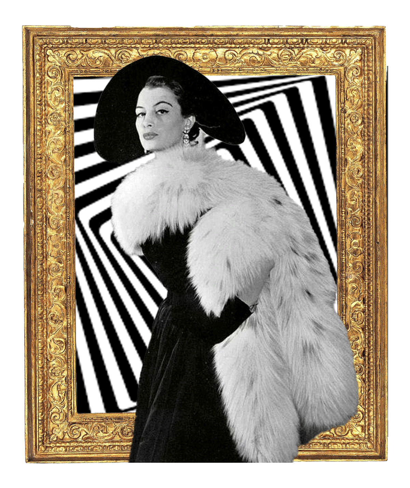

The
metamorphosis
"One morning, As Gregor Samsa woke from a fitful dream filled sleep, he found that he had changed into an enourmous beg bug. As he lay there on his back which resembled an enourmous breastplate, by raising his head slightly he could see his brown protuding belly made up of a series of rigid, arched segments, from the top of which his bedcovers were about to slip at any moment. His tiny legs- which, compared with his otherwie considerable girth, were pitifully thin- flapped around helplessly as he looked on"
What
Happened
To
Me?
Between the four familiar walls, his room, a rather small but undeniably human bedroom, was still there, as tranquil as ever. Above the table over which was scattered a bundle of fabric samples- Samsa was a commercial traveller- hung a picture that he had cut out of a fashion periodical and put in an attractive gilt frame. It was of a woman wearing a fur hat and fur boa, sitting very upright and showing off her furr muff into which her forearms disappeared.

Gregors gaze shifted to the window, and the cheerless weather- raindrops could be heard drumming on the zinc coloured window sill
Filled
Him
With
Meloncholy
"Why don't I keep sleeping for a little while longer and forget all this foolishness," he thought. But this was entirely impractical, for he was used to sleeping on his right side, and in his present state he couldn't get himself into this position. No matter how hard he threw himself onto his right side, he always rolled again onto his back. He must have tried it a hundred times, closing his eyes so that he would not have to see the wriggling legs, and gave up only when he began to feel a light, dull pain in his side which he had never felt before.
"O God," he thought, "what a demanding job I've chosen! Day in, day out, on the road. The stresses of selling are much greater than the work going on at head office, and, in addition to that, I have to cope with the problems of travelling, the worries about train connections, irregular bad food, temporary and constantly changing human relationships which never come from the heart. To hell with it all!" He felt a slight itching on the top of his abdomen. He slowly pushed himself on his back closer to the bed post so that he could lift his head more easily, found the itchy part, which was entirely covered with small white spots—he did not know what to make of them and wanted to feel the place with a leg. But he retracted it immediately, for the contact felt like a cold shower all over him.
He slid back again into his earlier position. "This getting up early," he thought, "makes a man quite idiotic. A man must have his sleep. Other travelling salesmen live like harem women. For instance, when I come back to the inn during the course of the morning to write up the neces- sary orders, these gentlemen are just sitting down to breakfast. If I were to try that with my boss, I'd be thrown out on the spot. Still, who knows whether that mightn't be really good for me? If I didn't hold back for my parents' sake, I'd have quit ages ago.
I would've gone to the boss and told him just what I think from the bottom of my heart. He would've fallen right off his desk! How weird it is to sit up at that desk and talk down to the employee from way up there. The boss has trouble hearing, so the employee has to step up quite close to him. Anyway, I haven't completely given up that hope yet. Once I've got together the money to pay off my parents' debt to him—that should take another five or six years—I'll do it for sure. Then I'll make the big break. In any case, right now I have to get up. My train leaves at five o'clock."
He looked over at the alarm clock ticking away by the chest of draw- ers. "Good God!" he thought. It was half past six, and the hands were go- ing quietly on. It was past the half hour, already nearly quarter to. Could the alarm have failed to ring? One saw from the bed that it was properly set for four o'clock. Certainly it had rung. Yes, but was it possible to sleep through that noise which made the furniture shake? Now, it's true he'd not slept quietly, but evidently he'd slept all the more deeply. Still, what should he do now? The next train left at seven o'clock. To catch that one, he would have to go in a mad rush. The sample collection wasn't packed up yet, and he really didn't feel particularly fresh and active.
And even if he caught the train, there was no avoiding a blow-up with the boss, because the firm's errand boy would've waited for the five o'clock train and reported the news of his absence long ago. He was the boss's minion, without backbone or intelligence. Well then, what if he re- ported in sick? But that would be extremely embarrassing and suspi- cious, because during his five years' service Gregor hadn't been sick even once. The boss would certainly come with the doctor from the health insurance company and would reproach his parents for their lazy son and cut short all objections with the insurance doctor's comments; for him everyone was completely healthy but really lazy about work. And besides, would the doctor in this case be totally wrong? Apart from a really excessive drowsiness after the long sleep, Gregor in fact felt quite well and even had a really strong appetite.
As he was thinking all this over in the greatest haste, without being able to make the decision to get out of bed—the alarm clock was indicat- ing exactly quarter to seven—there was a cautious knock on the door by the head of the bed.
"GREGOR!!!"
a voice called—it was his mother!
click on the door
The soft voice! Gregor was startled when he heard his voice answering. It was clearly and unmistakably his earlier voice, but in it was intermingled, as if from below, an irrepress- ibly painful squeaking, which left the words positively distinct only in the first moment and distorted them in the reverberation, so that one didn't know if one had heard correctly. Gregor wanted to answer in de- tail and explain everything, but in these circumstances he confined him- self to saying, "Yes, yes, thank you mother. I'm getting up right away." Because of the wooden door the change in Gregor's voice was not really noticeable outside, so his mother calmed down with this explanation and shuffled off.